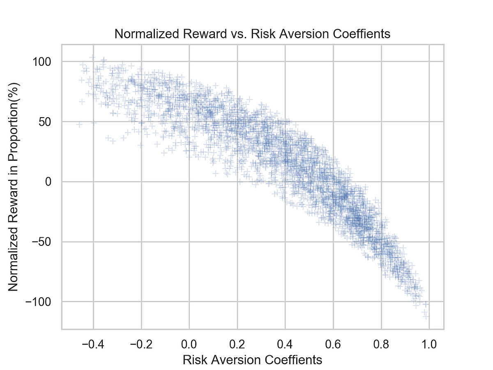

Click! Experiment
"Click! Experiment" is a small experiment run by the Acalab Academic team. Each phase of the experiment or research will focus on an interesting problem, which will be studied through simulation, measurement, observation and other experimental methods. Cut! The experiment hopes to popularize interesting little knowledge in interdisciplinary science fields through a series of micro experiments, arouse curiosity, and trigger deeper communication and practice. Here is our 1st experiment:
 The Alipay Global Koi Lotteries
The Alipay Global Koi Lotteries
Before the Alipay Global Koi Lotteries, we figured out how much a koi is really worth. What exactly is a koi? What is the utility and risk of a koi prize? How much does it cost to win a koi? At Acalab, we try to answer that question through computational simulation.
If you missed Alipay's Chinese Koi draw last year, don't miss the new "Global Koi" drawing on February 14, Valentine's Day. You may already be familiar with the Chinese koi "Xinxiaodai", or even have quietly memorized the prize list by heart. But what you may not realize is that there are risks and costs behind being a koi.
 What is koi?
What is koi?
The word "koi" originally came from popular Internet culture, where it was intended to repost pictures/jokes of koi fish for good luck. In October, Alipay launched a "Chinese Koi Global free of charge Gift Pack" lucky draw, in which a winner was selected from 3 million participants to take home a prize worth more than 500,000 yuan. Some have calculated that the chance of being chosen is less than being struck by lightning seven times in broad daylight.
It sounds like one in a million koi is just enviable, but what's the price?
First, is Alipay's choice of koi really purely random? As for Xin's perfect-looking status -- an active Weibo user, a young college graduate, a female student with potential purchasing power -- some have questioned whether there is a mehanism in the lottery to screen out applicants who only meet certain requirements. In other words, it may be that some participants have a lower winning rate than others to begin with, or even that it doesn't exist at all.
Even if you do hit the jackpot, the Koi prize list isn't all cashed out all at once. More prizes are experiential, requiring the koi to travel to a certain location or under certain conditions. In the process of cashing in the prize, koi also have to bear a lot of travel, attend the risk of activities, energy and money.
The cost of koi
There is a term in economics: risk appetite. For risk-seekers with an appetite for adventure, prizes such as traveling abroad or learning to fly a plane can have huge appeal, with the satisfaction of winning a prize greater than its monetary value. 'Risk averse', who tend to be more conservative, prefer low-risk, high-reward rewards, such as sitting at home waiting for gifts to arrive online. Honoring awards such as a cruise ship on the sea or a round-trip flight ticket between China and the United States often means giving up the original work and life time and inevitably taking greater risks. This is not pleasant for conservative people, who may think that a 10,000 yuan plane ticket is worth less than a 500 yuan box of snacks. We can say that the "ticket" is less effective than the "snack" here.
Risk Preferences and Utility
Risk appetite refers to a person's attitude toward taking risks. Before a decision is made, different people may have such attitudes as Risk Averse, Risk Neutral, Risk Seeking and so on regarding the risks to be taken by the decision. The more risk-prone people are, the more they like to pursue risks, and they are willing to take more risks in return for benefits.
Utility refers to the degree to which a person prefers something. In general, the greater the utility of a good, the more the person will like the good, and the more valuable it is. If you use money to take a popular example -- Master Wang as a risk seeker, between the value of 100 yuan bungee jumping experience and the same value of 100 yuan of clothing, the former is more useful to him than the latter. Perhaps Master Wang will feel that the excitement of bungee jumping can be worth 150 yuan; A single piece of clothing is meaningless. If you have to pay for it, you will pay 50 yuan at most. However, this does not mean that the value of "bungee jumping" and "clothes" itself has changed. Maybe Uncle Li next door is not agile, and the value of bungee jumping is almost zero, so he prefers clothes.
From this, we can briefly summarize some award costs of Chinese koi:
Exposure of personal information
After winning, letter small stay my micro blog up one million powder; Her name, date of birth, degree and even habits and hobbies are all exposed, which is an inevitable negative impact on her personal life.
The realization of prize value is erratic. For example, there is an item in the prize that says "CTA sincerely welcomes you", which makes it difficult to define the value of the experiential prize.
The time and economic cost required to honor a prize. For example, the prize includes "two months of free training for private pilots from the US General Chennault Flight Academy". If you want to fully experience it, you will have to spend two months in a foreign country, during which the food, clothing, accommodation and transportation are all troublesome problems. There are a lot of repetitive projects, such as several travel companies provide cruise ships, air tickets to send koi travel to Japan, the full prize needs to go abroad and back in a few months.
Personal and work time taken up by the honouring process. Long-term leave to travel not only lost the wages of the original job income, but also may be unfortunate to lose the job. So what is the utility and risk of a koi prize? How much does it cost to be a koi? At Acalab, we look at this question through Computational Experiment.
The experimental process
Before the experiment, we assumed that: Most people become Alipay Koi and choose to cash the actual income is negative
Experimental process:
-
Each experiment randomly generates a million candidates with different backgrounds and risk preferences and runs a total of 100 experiments
-
Hypothesize and simulate three Alipay/Weibo screening draw strategies, and randomly select one winning koi each time
-
Calculate the income (utility) and cost (risk) of the jackpot according to the risk preference, income and other attributes of the winner
-
The utility of the benefits minus the costs divided by the utility without considering the costs; Generate the relationship between this ratio and risk appetite
-
The final result is obtained by Monte Carlo Methods
In this experiment, we devised several strategies for picking winners. These strategies are likely to be much simpler than Alipay's actual screening methods, which are designed by our logical guesses. The three screening mechanisms used in this experiment are only used for the algorithm of simulation calculation experiment; In the real world, the strategies involved in such a high-profile campaign must be complex.
Screening specific targets: In order to prevent random selection of Weibo zombie accounts, accounts that have made improper remarks, and accounts that are not in line with the interests of activity promotion, participants with certain information will be directly screened.
Alipay credit score: credit score is a powerful tool of Alipay, which represents the user's frequency of use, product viscosity, credit evaluation, etc. There is reason to believe that the higher the credit score of Alipay users, the greater the chance of winning the prize
Consumption ability: Alipay can evaluate the user's payment ability by searching the user's information such as flow, consumption habits and purchase history of financial products. It is likely that the more powerful the consumer, the more likely the winner will be.
Experimental data:
We ran a total of 100 replicates, simulating 100 million candidates (each experiment randomly generated 1 million participants). Each experiment ran 10 rounds, and 30 different "koi" were selected through three algorithms. Each candidate randomly generated in the experiment was given a value between 350 and 950 as an Alipay credit score and a value between 25,000 and 600,000 as an annual income. One in 1,000 of the candidates was randomly assigned a "screening target."
Experimental results and analysis

Figure 1: The X-axis represents the risk appetite coefficient. The higher the risk appetite coefficient, the
more conservative people are. In the general population, most people tend to be conservative, that is, risk
averse (0.41
By calculating the ratio of returns with and without costs, we can compare the total value of different winners as koi. Because different people have different values for different things, Master Wang thinks that an item worth 150 yuan is only worth 0 yuan in Uncle Li's eyes, but the two values cannot be directly compared. It only makes sense to calculate within one's own value system.
From Figure 1, we can clearly see that the proportion of reward utility decreases with the increase of risk preference coefficient. This trend means that only the extreme risk savers get the full value of the koi, and the more conservative they are, the more expensive it is to cash in their prizes. 38.83% of the values on the Y axis are less than 0, indicating that for nearly 40% of the "koi", there is no positive utility at all, and even extra cost.
The results were surprising. But on closer consideration, it's not hard to see why. First of all, the value of the prize is not as big as it seems. Seemingly not to pull the end of the prize list in fact, there are many "water army" : Australian Kosmea beauty brand Koi "brush Alipay to buy cosmetics, send 2 10 ml rose apple oil skin nourishing essence", people go abroad to buy cosmetics will send two bottles of small samples, gift light affection heavy. Second, different winners carry different social identities. The new label "Chinese Koi" is a head-on collision with the old life, work and social relations, inevitably causing a lot of trouble. A backpacker with a mind on the road might appreciate free flights and cruises, while an otaku who likes to spend weekends at home making noodles and watching TV will be similarly flummeting. For most people with a conservative bias, even if they win the lottery, it's hard to commit half a year, change your life schedule and take a huge risk to cash them out.
Of course, we only considered items on the prize list in our experiment. The value of "Chinese Koi" may not lie in these awards at all. If Koi chooses to sign with an entertainment company to become a travel blogger, taking advantage of the opportunity of prize winning to travel around the world and broadcast the whole journey, it can not only get the support of the sponsored brand but also gain a large number of fans, which will make unlimited profits in the future. If you were the next global koi, what would you choose?
References:
"Risk Aversion and Incentive Effects." American Economic Review, 2002, 92(5), pp. 65-73 pp. 1644-55.
Abdellaoui, Mohammed; Reconciling Introspective Utility with Revealed Preference: Reconciling Introspective
Experimental Arguments Based on Prospect Theory. Journal of Econometrics, 2007, 138(1), pp. 356-378.